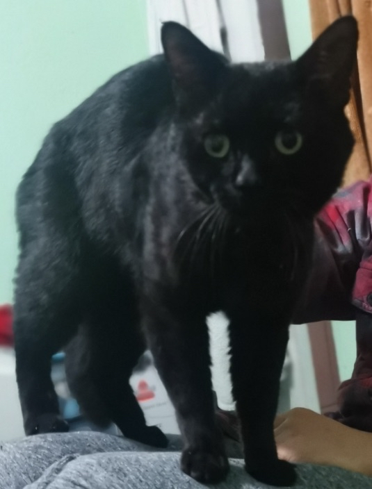

Welcome to Witchy's Inventions!
So you're probably wondering... who is Witchy?
Witchy was a stray we used to take care of. We called him Witchy because, well... he looked SO witchy! The biggest cat we ever laid eyes on, built like an ABSOLUTE UNIT! One day he quit visiting us, but he's left a lasting impression on all of us.
Anyways, we're a ragtag group of designers and engineers on a mission to change the world. So stick around and follow us as we embark on our journey. It's gonna be one h*ck of a ride!
The Witchy's Inventions Crew